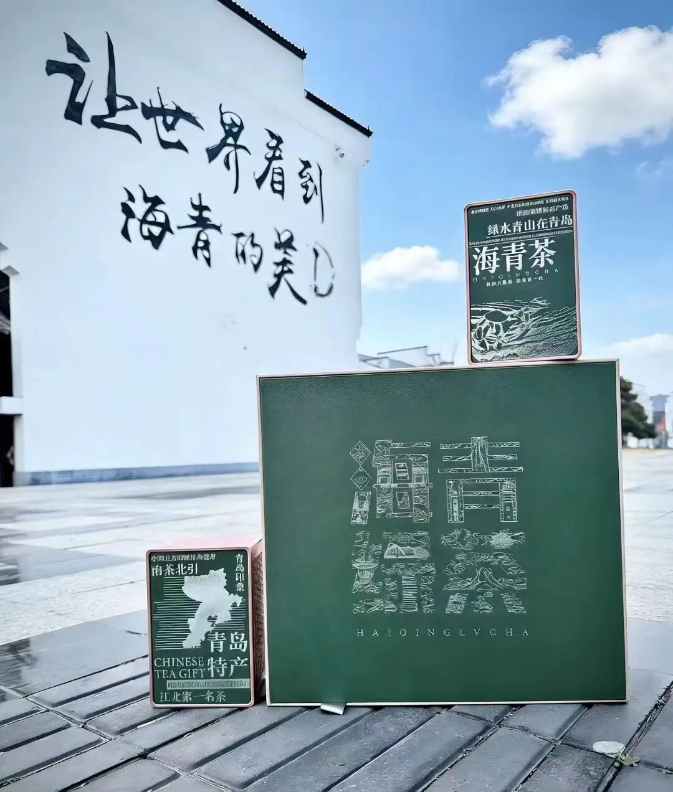
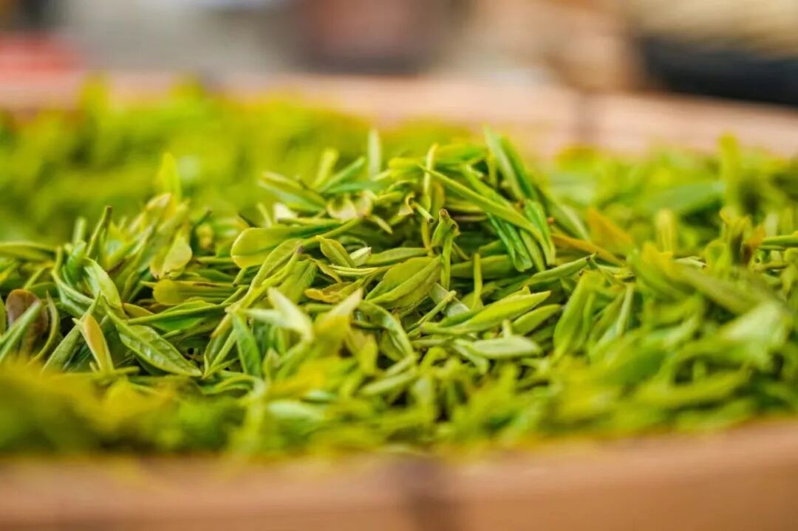
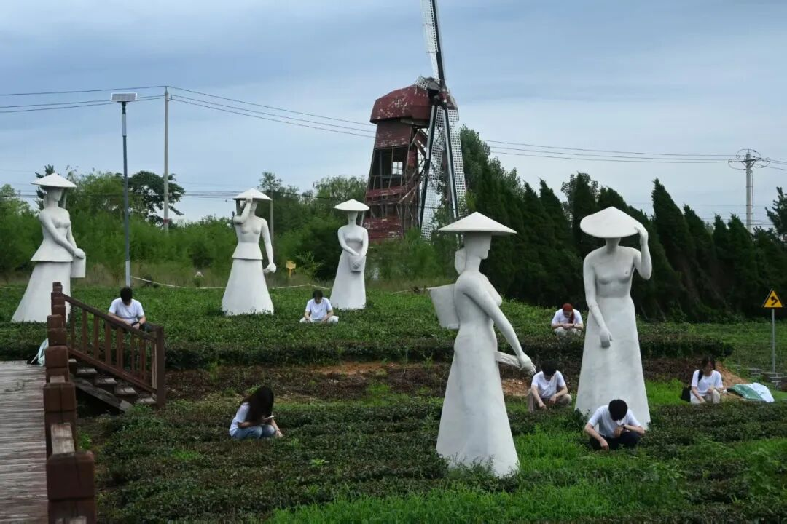

茶者，南方之嘉木也。曾有定论，北纬30度以北无好茶；但在青岛西海岸的山海之间，海青茶以一场跨越半个多世纪的“北上奔赴”，打破固有桎梏，书写了北方绿茶的传奇篇章。
为深耕本土茶文化、探寻茶香底蕴，茶叙青禾实践队走进海青茶乡，踏青山、入茶园、采新茗，以亲身实践触摸一片北方茶叶的生长密码，沉浸式感受山海孕育的独特茶香。
溯源时光：一场伟大的“南茶北引”
海青茶，是刻在青岛山海里的文化名片，也是北方茶业突破革新的时代印记。上世纪五六十年代，为破解北方茶叶稀缺的难题，山东启动“南茶北引”工程。1966年，首批优质茶苗落地海青镇后河西村42亩试验田。
农技人员和当地种茶人对抗低温、温差、光照等水土难题，让本该生长于江南的嘉木在北方滨海沃土扎根。从试验种植到茶厂投产，从零星茶园到连片茶田，海青茶逐渐成为地方特色产业，也让这片青绿成为乡村振兴的底色。


山海馈赠：独属于北方好茶的特质
海青位于北纬36°附近，依山近海，光照充足、昼夜温差较大。当地茶人把海青茶概括为叶片厚、香气高、滋味浓、耐冲泡。干茶条索紧实，冲泡后茶汤黄绿清亮，常见熟豆香、板栗香或豌豆鲜香，入口鲜爽醇厚、回甘绵长。
这些表现并不只由地理位置决定，茶树品种、采摘时段、芽叶嫩度和加工工艺也会共同塑造一杯茶的最终风味。团队在现场观察鲜叶、品饮茶汤，也由此理解“产地”背后是一整套长期形成的生产经验。
青禾躬行：亲手采摘山野新香
纸上得来终觉浅，绝知此事要躬行。队员们走进层层叠叠的茶园，在当地茶农指导下学习“一芽一叶、一芽二叶”的采摘标准：轻捏、快提、轻放，让鲜嫩芽叶完整落入茶篓。
从生疏到熟练，从初识茶形到懂得辨茶、采茶，大家在山野劳作中体会茶农的日常，也读懂一杯好茶背后的时光与匠心。阳光照在茶垄和忙碌身影上，一篓篓鲜叶装着山野灵气，也装着青年对本土文化的热忱。

未来，团队将继续以青春为炬、以实践为翼，挖掘海青茶文化内涵，传播北方特色茶香，让这片山海青绿在新时代被更多人看见。